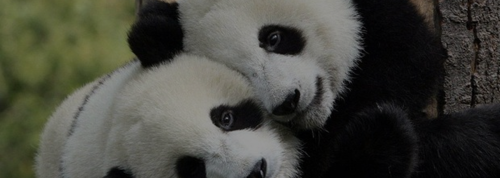

ORIGINE: ANIMALE TERRESTRE
PANDA
Il Panda è un mammifero terrestre che vive nelle foreste miste di bambù in Cina sud-Occidentale.
PERCHÈ È IN VIA DI ESTINZIONE?
Il panda è un grande pericolo poiché le due foreste sono sempre più distrutte e ridotte e questo porta l'animale a spostarsi e di conseguenza ad essere più vulnerabili.
- Dimensioni: è di medie dimensioni, raggiunge i 70/100 kg e 1,5/2 metri di altezza.
- Vita media: 20 anni.
- Colore: corpo ricoperto da una pelliccia bianca e nera
- Alimentazione: bambù e foglie di bambù.
- Stile di vita: è un animale solitario e timido, rimane per la maggior parte del tempo da solo e in un posto fisso a mangiare o dormire.
- Curiosità: pur essendo un animale molto grande dà vita a piccolissimi cuccioli di cui si prenderà cura per un bel po'.